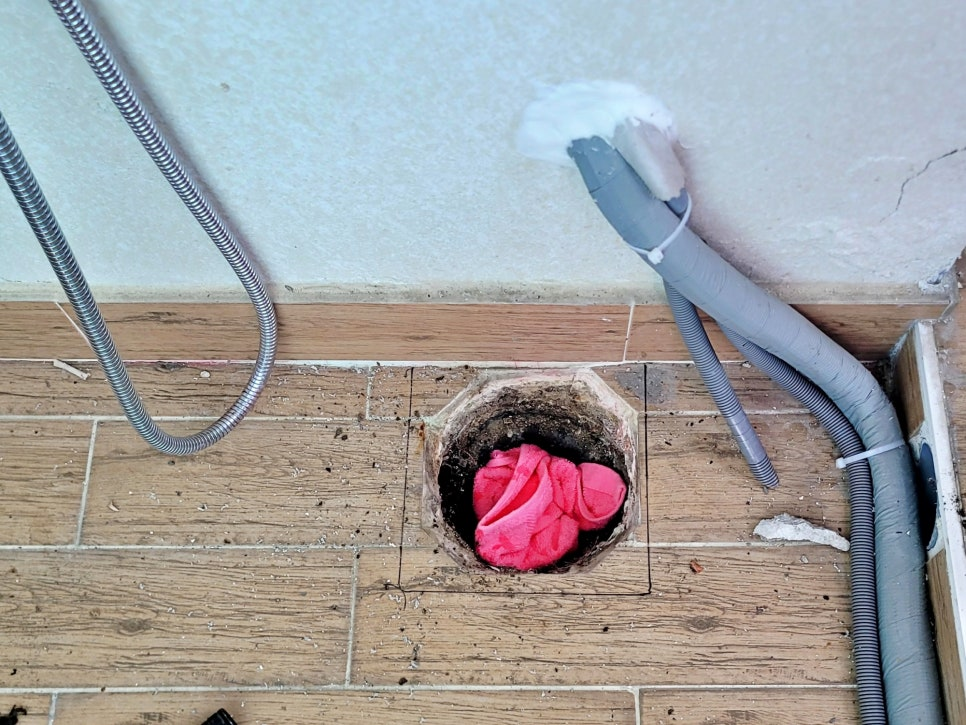
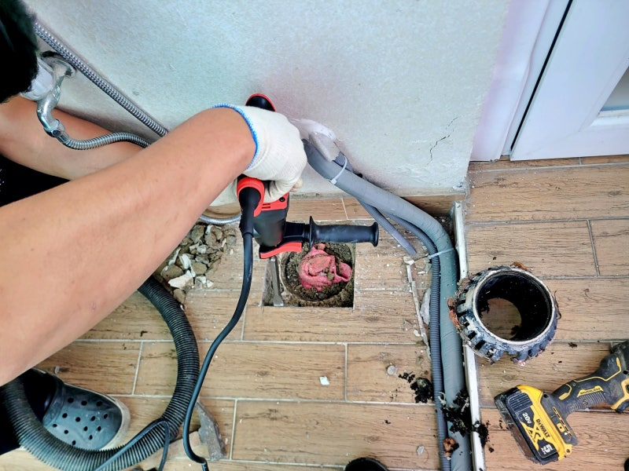
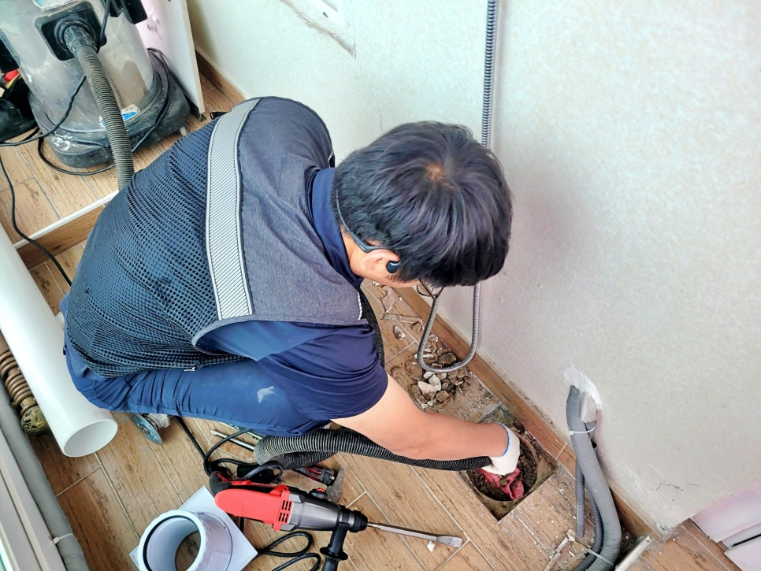

🏠 영통구 이의동 베란다누수, 우수관교체 방수공사 전문
수원 영통 베란다누수 우수관교체 전문 시공 후기

📋 작업 개요
- 위치: 수원시 영통구 이의동, 수원 영통, 이의동
- 서비스 유형: 베란다누수 수리, 우수관교체, 방수공사
- 작업 일시: 2026. 6. 3. 8:50
- 업체명: 하수구수사대 (010-5615-2118)
🔍 문제 상황
수원 영통구 이의동 베란다누수,
우수관교체 방수공사 전문업체 후기
(비만 오면 아래층누수 발생 원인 해결)
안녕하세요
수원시 영통구 이의동 베란다누수,
우수관교체 방수공사 전문업체
하수구수사대 인사드립니다.
얼마 전 수원 영통구 이의동에 있는
아파트에서 연락을 받고 다녀왔습니다.
영통구 이의동 베란다누수 현장 이미지
비만 오면 아래층 천장으로 물이 샌다는
다급한 호출이었는데, 막상 가보니
베란다 우수관 주변 상태가 말이 아니더군요.
평소에는 괜찮다가 비만 오면 문제가 생기는
우수관누수 현장은 배관 주변의 틈새가
주범인 경우가 많습니다.
영통구 이의동 베란다누수 원인
영통구 이의동 베란다누수 현장에
도착해서 꼼꼼히 살펴보니
기존 우수관 주변의 마감은 이미
수명을 다한 상태였습니다.
바닥과 배관이 맞닿은 경계면의 실리콘은
다 들떠 있었고, 방수층까지 손상되어 있는
상황이었죠.
사실 우수관 주변은 빗물이 끊임없이
🔎 원인 분석
💡 전문가 진단: 수원 영통구 이의동 베란다누수,우수관교체 방수공사 전문업체 후기(비만 오면 아래층누수 발생 원인 해결)
지나가는 길목이라 아주 미세한 틈만 생겨도
아래층으로 물이 스며들기 딱 좋은데요.
저희 하수구수사대는 겉만 대충 때우는
방식은 절대 권하지 않습니다.
우수관 및 바닥 방수층 철거 장면
그래서 일단 기존 우수관 주변 바닥을
조심스럽게 철거하는 작업부터 시작했습니다.
아니나 다를까, 속을 들여다보니
방수 마감이 엉망이었고 바닥 안쪽으로
습기가 가득 머물러 있더군요.
영통구 이의동 베란다누수 현장과 같은
상태에서는 단순한 실리콘 보수만으로는
해결이 안 됩니다.
이의동 우수관 교체 및 방수 작업 과정
배관 주변을 깔끔하게 정리한 뒤에는
새로운 우수관이 완벽하게 자리 잡을 수 있도록
바닥 면을 평평하게 다듬었습니다.
배관의 높이나 수직이 조금이라도 어긋나면
나중에 마감이 흔들릴 수 있어서
이 과정만큼은 정말 신경 써서 진행했는데요.
특히 배관이 통과하는 자리에
틈이 남지 않도록 빈틈없이 메워주는 것이
이번 수원 우수관누수를 잡는 핵심입니다.
영통구 이의동 베란다누수 현장
우수관 주변에 방수재가 제대로
착 달라붙을 수 있도록 바탕 처리를
🔧 작업 과정
확실하게 하고, 새로운 배관을 세워
위치를 잡았습니다.
이의동 우수관 주변 방수 작업 완료 후 모습
많은 분이 베란다누수 문제를 겪으면서
배관만 갈면 끝나는 줄 아시는데,
사실 영통구 방수공사는 배관 설치보다
그 주변을 어떻게 마감하느냐가
훨씬 중요한데요.
물이 가장 많이 모이는 하단부와 바닥이
만나는 자리에 방수층을 충분하고 두껍게
형성해줘야 비가 아무리 많이 와도
안심할 수 있는 것이죠.
영통구 이의동 우수관 교체 작업 과정
방수 작업을 마치고 나서 다시 한번
우수관 상부와 하부 연결 부위,
그리고 전체적인 바닥 마감 상태를
체크했습니다.
비 올 때마다 마음 졸이셨을 고객님께서도
이제는 안심이 된다며 만족해하시더군요.
영통구 이의동 현장 후기를 마치며
우수관 교체 후 배수 테스트 진행 과정
이번 현장은 우수관교체와 방수공사를
동시에 진행하여 아파트우수관교체의
정석을 보여준 사례였습니다.
혹시 지금 비 올 때마다 누수가 발생해서
스트레스를 받고 있나요?
그럴 때는 단순하게 마감재만 덧바르지
마시고, 하수구수사대처럼 정확하게 원인을
파악해서 우수관교체와 방수공사를
확실하게 처리하는 곳을 찾으셔야 합니다.
현장 상태를 정확히 진단하고
필요한 범위만큼만
꼼꼼하게 작업해야 재발 없는
확실한 방수가 가능하니까요.
베란다누수 및 우수관교체 관련 FAQ
Q. 비 올 때만 아래층으로 누수가 생기면
우수관 문제일 가능성이 큰가요?
A. 가능성이 있습니다. 평소에는 괜찮다가
비가 올 때만 누수가 생긴다면 우수관 주변 틈,
바닥 방수층 손상, 배관 주변 마감 불량을
같이 살펴봐야 합니다.


✅ 작업 완료
Q. 우수관교체만 하면 베란다누수가
해결되나요?
A. 현장 상태에 따라 다릅니다. 우수관 자체보다
주변 방수층이 손상된 경우도 많기 때문에
우수관교체와 방수공사를 함께 진행해야
재발 가능성을 줄일 수 있습니다.
그럼 지금까지
영통구 이의동 베란다누수,
우수관교체 방수공사 현장 후기를
읽어주셔서 감사합니다.
#영통구이의동베란다누수 #영통구이의동우수관교체 #방수공사 #수원우수관누수 #영통구베란다방수공사 #아파트우수관교체 #베란다누수 #빗물누수




⚠️ 베란다 누수 및 방수 관리 방법
- ✅ 비가 많이 올 때 창틀 주변이나 아래층 천장에 얼룩이 생기는지 정기적으로 확인해 보세요.
- ✅ 우수관 주변 실리콘 마감이 들뜨거나 깨진 틈새가 있는지 손상 여부를 수시로 체크하세요.
- ✅ 베란다 바닥 타일의 줄눈(메지)이 소실되면 그 틈으로 물이 침투하여 누수가 유발됩니다.
- ✅ 누수 의심 증상 발견 시 방치하면 아래층 손실이 커지므로 즉시 전문가의 진단을 받으십시오.
💡 핵심 정리
- 확실한 장비 작업(내시경 점검 및 샤프트 스케일링)으로 원인을 뿌리 뽑습니다.
- 작업 후 1년 이내에 동일한 부위 재발 시 100% 무상 A/S 서비스를 보장합니다.
- 서울 · 경기 · 인천 전 지역에 24시간 언제든 긴급 출동할 수 있도록 항시 대기 중입니다.
❓ 자주 묻는 질문 (FAQ)
🚨 수원 영통 베란다누수 우수관교체 문제로 고민이신가요?
정확한 원인 진단과 확실한 시공으로 재발 없는 해결을 약속드립니다.
24시간 긴급 출동 | 서울 · 경기 · 인천 전지역 | 1년 내 재발 시 무상 A/S